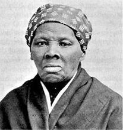

|
Folklore is a process of communication through the use of artistic forms which
arise in recurring performances. These forms may consist of oral traditions
(folk speech, proverbs, legends, folk songs, etc.), customs (folk beliefs or
"superstitions," rituals, dances, folk games, etc.), and material culture (folk
architecture, arts and crafts, foodways, etc.). The term folklore refers not to
a collection of things but to patterns of behavior. For folklore to exist, these
forms must be performed. Such performances are necessary to cultural continuity.

Brer Rabbit was central to much slave humor and folklore.
|
The folk speech of the slaves included a wide variety of folk linguistic
phenomena, ranging from full-blown Creole languages such as Gullah to lexical,
syntactical, or phonological variations from standard speech. The folk
expressions made colorful and explicit comments on the experience of slavery.
The slaves worked "from can to can't." They had to "root like a pig or die." The
master "didn't give me sweat off de black cat's eye." But slavery made the slave
tough: the "buzzards laid me and de sun hatch me." A significant aspect of slave
folk speech had to do with onomastics, or naming practices. Not only were Akan
day names still found among slaves as late as the 1860s, but African patterns of
naming persisted to an even greater extent. Kin-names were passed on in
families, and surnames (or "titles") were in wide use within the slave community
before emancipation.
The African penchant for proverbial ways of speaking--that is, speaking by
indirection--was reflected in slave proverbs, which served as metaphors of
social experience. Some African proverbs survived almost unchanged: the Hausa
"Chattering doesn't cook the rice" continued in the South Carolina low country
as "Promisin' talk don' cook rice." But others underwent local changes. The
Bantu "Every beast roars in its own den" became the Gullah "Every frog praise
its own pond [even] if it dry." Some spoke directly to the experiences of the
plantation: "Ol' Massa take keer o' himself, but de niggah got to go ter God."
Others could take on heightened meaning in the context of slavery. "Dere's a
fambly coolness twixt de mule an' de singletree" could be employed as a comment
on master-slave relations. "Yuh mought as well die wid de chills ez wid de
feber" could be employed as a comment on the relative merits of trying to escape
or remaining in bondage.
Across the South, slaves narrated legends (folk narratives set in historical
time which are told as though true) of "Ole Nat" (Nat Turner), "Moses" (Harriet
Tubman), Frederick Douglass, John Brown, and Abraham Lincoln. According to one
such legend, "I was looking right in Lincoln's mouth when be said, 'The colored
man is turned loose without anything. I am going to give a dollar a day to every
Negro born before Emancipation until his death--a pension of a dollar a day.'
That's the reason they killed him." Another form of legend purports to explain
how things came to be. Many such legends persisted as humorous stories--or
etiological tales--even after belief had eroded.
|

Harriet Tubman
|
The folktales of the slaves included tall tales (or improvements on reality,
with smart slaves smarter, bad weather worse, and big crops bigger), outrageous
falsehoods narrated with a straight face in the sober tones of truth. But
trickster tales, with their theme of the struggle for mastery between the
trickster (usually a small but sly, weak but wily animal such as Brer Rabbit)
and his bigger and more powerful adversary, were the most popular tales on the
plantations. The trickster defeats his rival by outwitting him. The slaves also
narrated a cycle of human trickster stories featuring the slave John and his
never-ending contest with the master. In such tales the slaves used language as
symbolic action. By manipulating the words that defined their world, they
verbally rearranged it and turned it symbolically upside down.
Singing and making music were especially significant performances on the
slave plantations. An Alabama slave remembered, "I'se can hear them darkies now,
going to the cotton patch 'way 'fore day a-singing." The slaves sang while they
plowed and hoed under the broiling sun and came in singing from the fields.
After the day's work was done, slaves entertained their children with play songs
and at night sang them to sleep with lullabies.
Religious services were especially marked by music. Whether they slipped away
into the woods on Sunday evenings or had general prayer meetings on Wednesday
nights at slave chapels, the slaves often "turn de wash pot bottom upwards so de
sound of our voices would go under de pot." They "would have a good time
shouting, singing, and praying just like we pleased." At baptizings they would
sing appropriate spirituals, such as "Roll, Jordan, Roll" or "Going to the
Water." After evening services slaves would sing on the way home. "As the wagon
be creeping along in the late hours of moonlight," a slave recalled, someone
would raise a tune. "Then the air soon be filled with the sweetest tune as us
rid on home and sung all the old hymns that us loved." As they rode through the
quarters, slaves who had not been to church would "come out to the cabin door
and jine in the refrain. From that we'd swing on into all the old spirituals
that us love so well and that us knowed how to sing."
On Saturday nights, from Virginia and the Carolinas through Alabama and
Mississippi to Louisiana and Texas, the slaves held dances and frolics. Talented
slave "musicianers" played such old-time songs as "Arkansas Traveler," "Black
Eyed Susie," "Jimmy Long Josey," "Soldier's Joy," and "Old Dan Tucker."
According to a Mississippi slave, when the fiddler played the old reels, "you
couldn't keep your foots still." "Oh, Lord," recalled a North Carolina slave,
"that fiddle could almost talk."
Some of the slave songs commented directly on the world of the plantation:
Run nigger, run
De Patteroll [patrol] get you!
Run nigger, run,
De Patteroll come!
A North Carolina slave said, "dat one of the songs de slaves all knowed." In
Virginia the slaves sang a song when the master was shipping them to market:
"Masse's Gwine Sell Us Tomorrow." Other songs were satirical. Texas slaves:
Fool my master seven years,
Going to fool him seven more.
Hey diddle,
de diddle, de diddle, de do.
When Sherman's troops marched through South Carolina and many masters fled
their plantations for safer ground, slaves sang:
Master gone away
But darkies stay at home.
The year of jubilee is
come
And freedom will begun.
And in the aftermath of emancipation, they sang:
Now dat overseer want to give trouble
And trot us 'round a spell,
But
we lock him up in de smokehouse cellar
With de key done throwned in de well.
There was considerable continuity with African patterns of folk belief on the
slave plantations of the New World. Ghosts or haunts the spirits of the dead--
returned to trouble the living. "I knows dere is ghosts," recalled an Alabama
slave, because "dis spirit like an angel come to my mammy and told her to tell
de white lady to read de Bible backwards three times." Various charms--a rabbit
foot or coon foot--could ward off their unwelcome visits. Other slave folk
beliefs included signs--if "a screech owl lit on your chimney and hollered," it
signified that "somebody in dat house was goin' to die."
African spirit possession was incorporated into slave Christianity, but many
slaves took their problems to plantation conjurers. The conjurers, assisted by
various substances which were held to be magical' were relied upon for
protection against "ruin or cripplin' or dry up de blood" (all misfortunes were
regarded as emanating from magic) and for casting spells upon enemies. On the
Sea Islands of South Carolina conjurers were known to "put bad mouth on you."
Not all slaves believed in conjure. "Dem conjure-folks can't hurt you lessen you
believe in 'em," one slave contended. Another said, "Ma told us chiller voodoo
was a no 'count doin' of de devil, and Christians was never to pay it no
attention. But others took no chances. "I been a good Christian ever since I was
baptized," an Oklahoma slave said, "but I keep a little charm here on my neck
anyways."
As in peasant cultures, the slaves' long days of toil in the cotton, sugar,
and rice fields alternated with periods of ritual celebration. Harvest time was
such an occasion. "After the cotton was picked dey would eat barbecue, and
dance, and have a big time," a Georgia slave remembered. In the South Carolina
up-country on the Fourth of July "us went to barbecues after morning chores was
done." There were also corn shuckings, wedding parties, and festivities on
various holidays. Slaves typically celebrated Christmas and Easter. Some
Virginia slaves also had a Whitsun holiday. "On dem days we would play ring
plays, jump rope, and dance. Then nights we'd dance juba." Christmas was the
most popular holiday. A Missouri slave reported that "during Christmas time and
de whole month of January, it was de rulin' to give de slaves a holiday in our
part of de country. A whole month to go and come as much as we pleased and go
for miles as far as we wanted to, but we had better be back by de first of
February." A two- or three-day holiday was more typical elsewhere. In Georgia:
A tree am fix, and some present for everyone. The white preacher talk 'bout
Christ. Us have singing and 'joyment all day. Then at night, the big fire
builded, and all of us sot round it. There am 'bout hundred hog bladders save
from hog killing. So, on Christmas night, the children takes them and puts them
on the stick. First they is all browed full of air and tied tight and dry. Then
the children holds the bladder in the fire and pretty soon, "BANG!" they goes.
That am the fireworks.
North Carolina (as in Jamaica) the John Canoe festival was an exotic part of
the Christmas celebration in which bands of dancers, keeping time to the beat of
the "gumbo box," triangles, and jawbones begged donations from spectators.
Slave children played various folk games in the quarters, ranging from
pastimes (running, jumping, skipping, jumping poles, walking on stilts, riding
stick horses, etc.) to games of skill (jump rope, ball, marbles, horseshoes,
etc.). Games of concealment, such as "I Spy," "Blindfold and Tag," "Peep
Squirrel Peep," and "You Can't Catch Me," taught young slaves potentially useful
skills. "Sometimes us made bows and arrows. Us could shoot 'em, too, jus' like
de little Injuns." For older children, there was the "well game." "De gal or boy
set in de chair and lean way back and pretend like dey in de well. Dey say dey
is so many feet down and say, 'Who you want pull you out? And de one you want
pull you out, doy s'posed to kiss you."

Two banjos used by slaves. The smaller design is much more
African, the larger reflects an American influence.
|
Folk architecture was strikingly exemplified in the slave cabins, varying
from slave quarters built of stone (reported in Kentucky) to "old ragged huts
made out of poles" (in Alabama). Some slave cabins were described by ex-slaves
as "good houses, weatherboarden with cypress and had brick chimneys," but more
commonly they were built of logs, perhaps covered with slabs. On some
plantations, "dey wasn't fitten for nobody to live in. We just had to put up
with 'em." The cracks between the logs were chinked with mud or clay, not always
successfully. A Texas slave reported that "the cold winds in the winter go
through the logs like the walls was somewhere else." Some cabins were large; a
Missouri slave claimed that "de hewed log house we lived in was very big, about
five or six rooms." Far more typical was the one- or two-room cabin in which as
many as a dozen people might live. The chimneys were usually built of sticks,
clay, and mud, with a coat of clay daubed over them. All too often they caught
fire. "Many the time we have to get up at midnight and push the chimney away
from the house to keep the house from burnin' up." Some cabins had plank floors,
but others had none. A Georgia slave lamented, "Dey no floor in dem houses,
'cept what God put in dem." According to a Mississippi slave, "My ma never would
have no board floor like de rest of 'em, on 'count she was a African. "
Talented slave artisans created beautiful arts and crafts. On the rice
plantations of the South Carolina low country, women made wide fanner baskets
with low sloping sides after the African method of coiled basketry. In Georgia
slave basketmakers made plaited baskets and mats. Throughout the South slave
women made quilts--often in strip patterns--both to keep their families warm and
to provide a beautiful object in the cabin. A North Carolina slave described how
"the womenfolks carded and spun and wove cloth, then they dyed it and made
clothes. And we knit all the stockings we wore." Slave blacksmiths not only shod
horses and other livestock but also made the striking wrought-iron gates that
were especially prized in South Carolina and Louisiana. And slave craftsmen were
adept at making musical instruments which were beautiful both to see and to
hear. There were fiddles made from gourds, banjoes made from sheep hides, bones
from beef ribs, and quills made from willow stalks:
"You takes de stick and pounds de bark loose and slips it off, den split de
wood in one end and down one side, puts holes in de bark and put it back on de
stick. De quill plays like de flute."
Folk cultural expression was also exemplified in slave foodways. At sunset in
the slave quarters one could smell the aromas of cornbread, peas and rice, and
pork or fish cooking over wood fires. Typically, each slave family had its own
garden plot from which the family supplemented its weekly allocation of rations.
Hunting and fishing added additional variety to the cuisine. On some
plantations, "we always made at least one barrel of peach brandy and one o'
cider. That would be vinegar 'nough by spring. 'Simmon beer was good in the cold
freezing weather too. We make much as we have barrels if we could get the
persimmons." Slaves ate the foodstuffs of the plantation environment; but slave
cooks applied to them African methods of cooking and spicing, remembered
recipes, ancestral tastes. They thus not only maintained cultural continuity
with African foodways but also creatively adapted African traditions to the New
World.
The folklore of the slaves was thus a pattern of learned behavior that
functioned both to express and to shape the attitudes of the slave community.
Its forms and style were social rather than individual, denoting in a very
direct way the ranges of behavior appropriate to various contexts. Slave
folklore was not peripheral to slave life. On the contrary, through their
folklore the slaves proclaimed their sense of community and molded individuals
into a common culture.
Source: Randall M. Miller and John David Smith, eds. Dictionary of
Afro-American Slavery (Westport, CT: Praeger, 1997), 253-58.
|